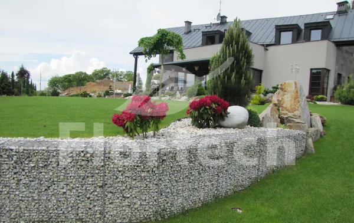
Projektowanie i zakładanie ogrodów
Wywiad na działce, pomiary, projekt z wizualizacją 3D i wykonanie całości.
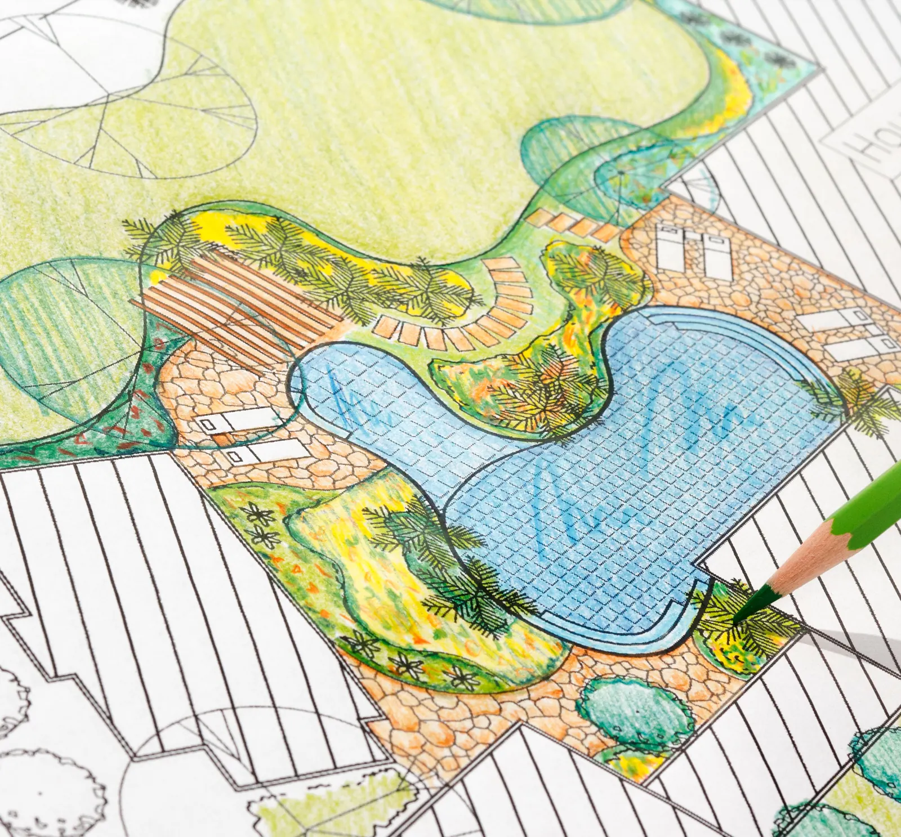
Flortech z Woli Rzędzińskiej robi cały ogród w jednych rękach: projekt, prace ziemne, instalacje, tarasy, wodę, rośliny i późniejszą pielęgnację. Od 1999 roku.
Nie trzeba szukać osobno projektanta, koparki, instalatora i ogrodnika. Prowadzimy ogród od pierwszej rozmowy na działce do ostatniego koszenia.
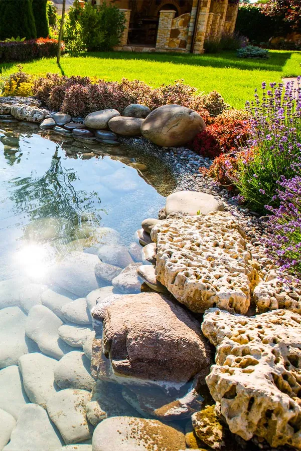
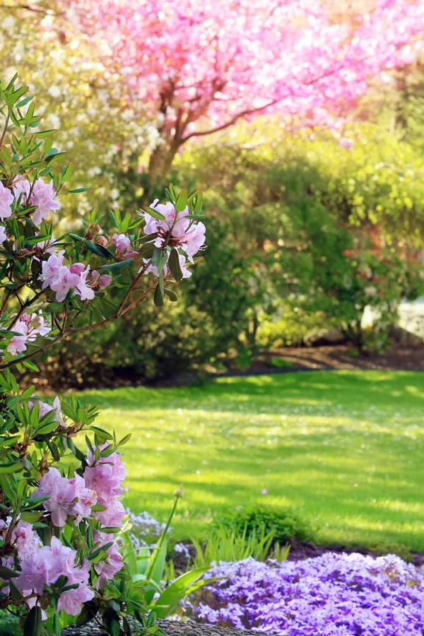
Jedenaście zakresów prac, które można zamówić razem albo osobno.

Wywiad na działce, pomiary, projekt z wizualizacją 3D i wykonanie całości.
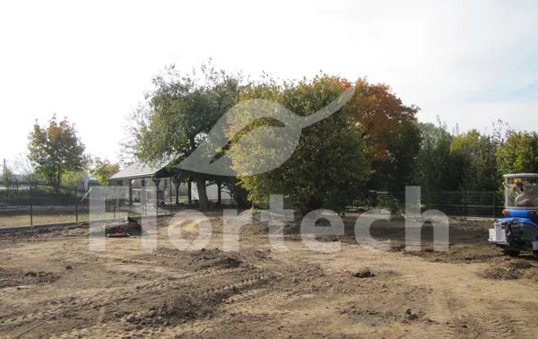
Niwelacje, wykopy, wymiana gruntu, stabilizacja skarp, usługi mini-ładowarką.
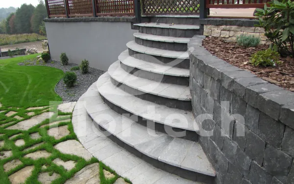
Mury oporowe, gabiony, ogrodzenia, ścieżki, podjazdy, altany, grille, pergole.
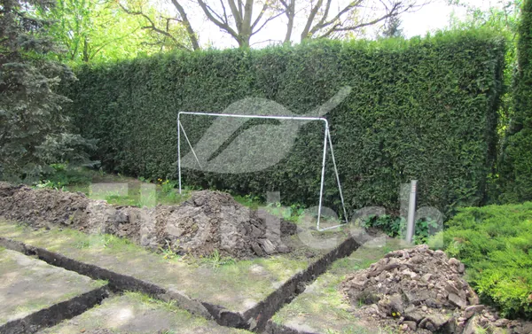
Odwodnienia, melioracja, zbiorniki na deszczówkę, nawadnianie i oświetlenie ogrodu.
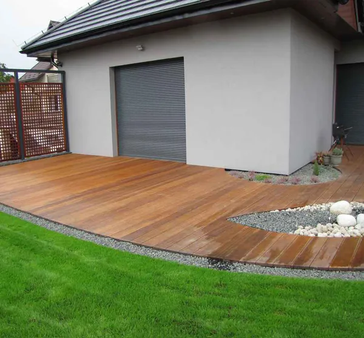
Kompozyt, drewno egzotyczne, kamień i beton architektoniczny, z izolacją i odwodnieniem.
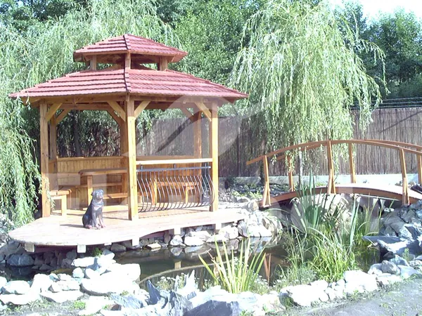
Oczka wodne, kaskady, fontanny i stawy.
Drzewa, krzewy, byliny, ogrody ziołowe i warzywne, trawniki, odnawianie starych ogrodów.
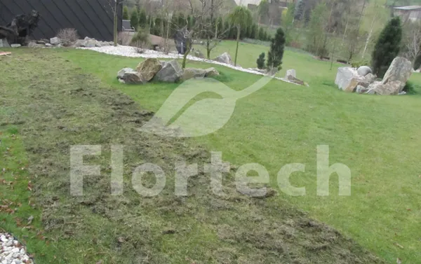
Cięcia drzew i krzewów, koszenie, wertykulacja, aeracja, nawożenie, zabezpieczenie na zimę.
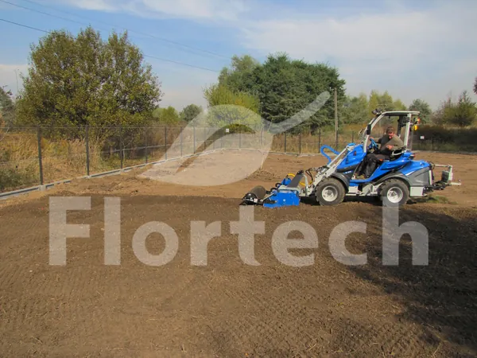
Przesadzanie dużych drzew, cięcie wysokich żywopłotów, frezowanie pni, odkamienianie terenu.
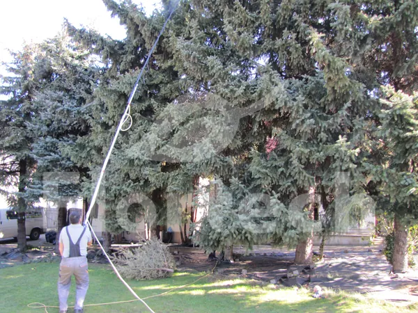
Rozpoznanie chorób i szkodników, opryski, także biologiczne i ekologiczne metody.
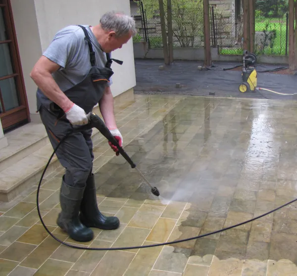
Mycie tarasów, kostki, dachów i elewacji, wywóz gruzu i odpadów zielonych, odśnieżanie.
Ogrody, tarasy, schody i fontanny zrobione przez naszą ekipę. Kliknij zdjęcie, żeby je powiększyć.
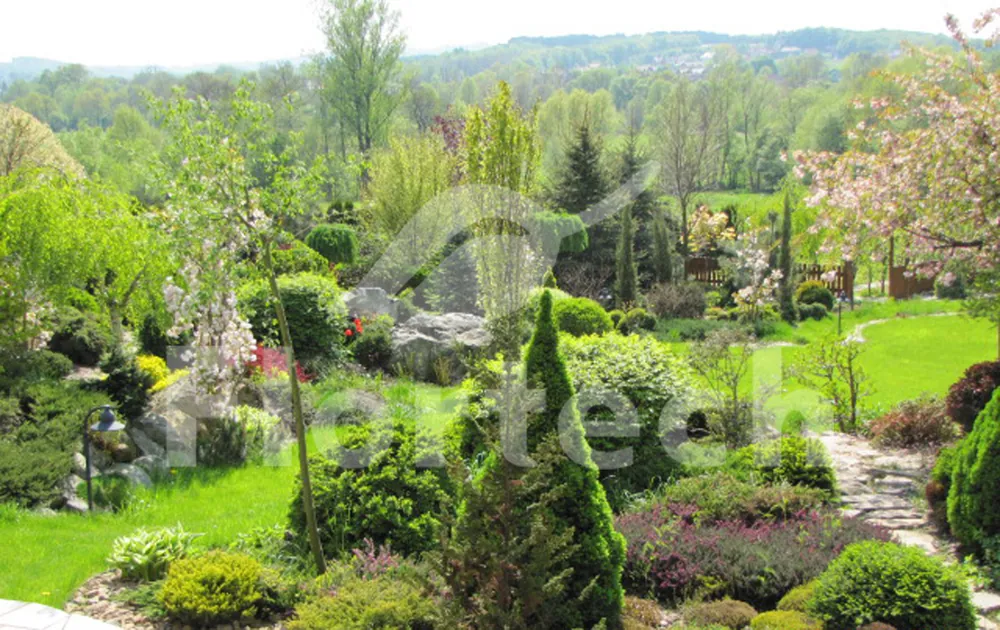
Flortech Zakład Kształtowania Krajobrazu działa od 1999 roku. Mamy kierunkowe wykształcenie i doświadczenie zarówno ogrodnicze, jak i budowlane, dlatego bierzemy też trudne działki: skarpy, podmokły teren, wymianę gruntu pod dom.
Pracujemy rozbudowanym parkiem maszyn, regularnie jeździmy na szkolenia i branżowe wystawy. W projekcie nie chodzi nam o idealny rysunek, tylko o najlepsze rozwiązanie dla konkretnej rodziny i działki.